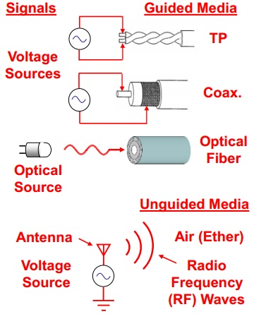
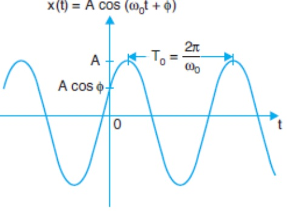

Understanding Information, Communication and Signal Transmission
The word information comes from the Latin root meaning "to shape the mind". Information may be facts, data, states or details. It is one of the most important resources in today's modern world.
Communication is the transfer of information between a Transmitter (Tx) and a Receiver (Rx). Information is represented through symbols carrying various amounts of intelligence.

Signals containing information are transferred between transmitter and receiver through a channel.
A sine wave is a fundamental periodic signal that repeats after a fixed time interval.
Analysis of voltage, current and power variations with respect to time is called Time Domain Analysis.
